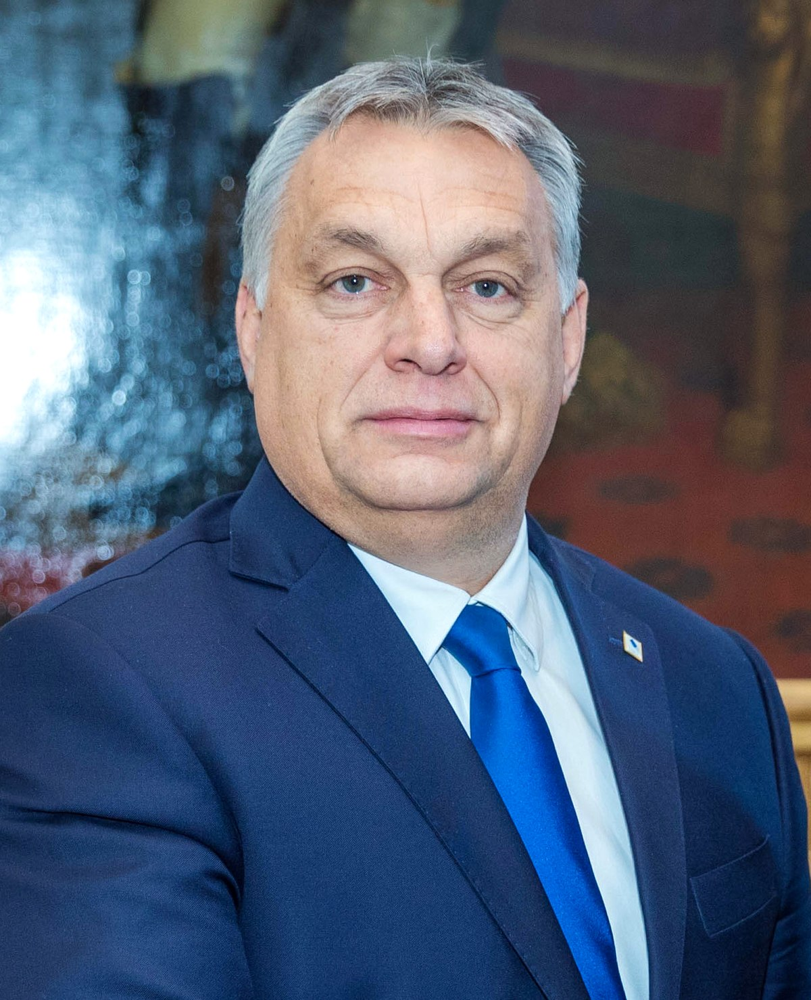

Orbán Viktor (Székesfehérvár, 1963. május 31. –) magyar jogász és politikus, 1998-tól 2002-ig, valamint 2010 óta Magyarország miniszterelnöke.[1] 1988-ban a Fidesz egyik alapító tagja. A Nagy Imre és társai újratemetésén, 1989. június 16-án elmondott beszéde tette országszerte ismertté nevét és pártját.[2][3] 1993-ig a Fidesz választmányának tagja. 1993 és 2000 között, illetve 2003 óta a párt elnöke. 1990-től országgyűlési képviselő, 1990 és 1994 között a Fidesz frakcióvezetője. 1992 és 2000 között a Liberális Internacionálé,[4] 2002-től 2012-ig az Európai Néppárt egyik alelnöke, 2021-től a Centrista Demokrata Internacionálé (wd) alelnökeinek egyike.[5] 2010-es miniszterelnökké választása óta egyes nyugati vezető médiumok gyakran autokrataként vagy (populista) diktátorként jellemzik.[6] Jogi tanulmányait követően szerzett doktori címét jelenleg nem használja.[7]
